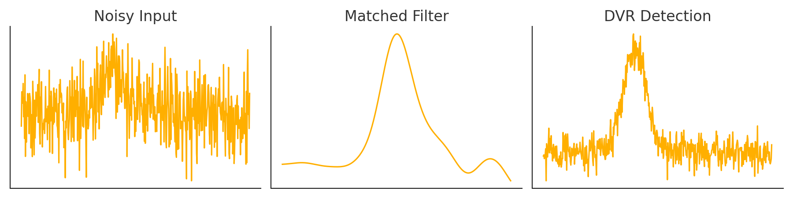

DVR-Based Detection: Better Than Matched Filter
This new detection algorithm uses local projections to significantly improve pulse detection in noisy environments.
- ✅ 25–28 dB SNR improvement over matched filter
- ✅ No tuning or ML needed
- ✅ Works in low SNR, overlapping pulses, and colored noise

Request Demo / Licensing